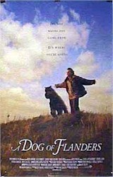
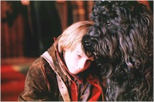
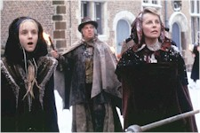

Contents | Features | Reviews | Books | Archives | Store |
 |
|
| Movie Credits | Buy It! |
A Dog of Flanders
Review by
Elias Savada
Posted 27 August 1999
|  |
Directed
by Kevin Brodie. Starring Jack Warden, Written
by Kevin Brodie and Robert
Singer, |
Step
into the darkened theater and the familiar smell may not hit you immediately.
Watch your step, though, because A Dog of
Flanders is nothing but cinematic doggy poo. Wafting through more than an
hour and a half of this maudlin piece are too many moments of wooden acting
creaking under the weight of fake snow drifts and imitation drama. The
uninspired attempts to make the plight of a lowly orphan endearing will have so
bored the audience by film’s end that exit polls will indicate they would have
rather spent the time picking navel lint. Heck, if you were smart enough to
leave early you’re one up on everyone else who manages to stick this dog out.
Agonizingly one-dimensional and sickly saccharine, this family feature from
Warner Bros. deserves a quick fade to the video dust bin faster than you can say
“Belgian waffle.”
Based on the popular children’s book
by Ouida, published over 125 years ago, this latest adaptation (following 1914,
1924, 1935, and 1959 films, in addition to a German television version in 1976),
is a dreary effort about a cute lad and his aging, gout-ridden grand-papa, the oeuvre
of the late, great artist Peter Paul Rubens (who makes a cheerless, ghostly
appearance late in the film) and its influence on the boy, and Patrasche, a
mangy Bouvier des Flanders as the small family’s best friend.
Even
the lovely Belgian landscapes, where the film was shot on location evoking early
19th-century life among the windmills and farms, aren’t all that
impressive. Actually they’re pretty drab in their depressing brown and pinkish
hues. Amid these humble settings arrives Nello (played by Jeremy James Kissner
and, slightly older, by Jesse James) and Jehan Daas, his grandfather (Jack
Warden), their artistically-inclined mother/daughter dead in the opening scene
and the men left to fend for themselves a harsh peddler’s life at the cursed
hands of a deceptive, lascivious landlord (Andrew Bicknell, daubing a bland,
stereotypical tint on his “You must pay the rent!” character)
There’s little to recommend here as
the boy’s creative talent is nurtured by the inane homilies (“Reach for the
Stars”, “If you know yourself, you know her.”) of Michel La Grande, a
local artist that the audience immediately recognizes as someone more closely
related to the child than just an ardent admirer. Jon Voight, many years removed
from his best performances (Midnight
Cowboy, Coming Home) looks
ridiculous in his aristocratic period garb, muttonchops, and fright wig. Former Charlie’s
Angel Cheryl Ladd strains for notice as a maternal influence and family
cornerstone, but her role is just as poorly scripted as the rest. Character
actor Bruce McGill comes off the best as the village blacksmith with a heart of
gold.
Perhaps I am being too harsh on the
thespians. The true fault lies in Kevin Brodie’s misguided, preachy direction.
A former child star turned director of the lackluster 1984 comedy Delta Pi (Mugsy’s Girls) before
segueing ten years later with the forgotten and forgettable Treacherous,
a title that now best describes Brodie’s career plans after his latest
Waterloo.
Basically
witless and with limited comedic relief and a laughable puppy-love subplot, the
film devolves into a Job-like descent for the older Nello, who stumbles through
false accusations, poverty, and loneliness before collapsing in the town church
at the foot of the Rubens masterpiece The
Taking Down of Christ in search of warmth and redemption (which he finds in
a Christmassy out-of-body experience). Equally lacking is a coherent grasp on
continuity. Nello is shown painting but barely has a speck on his hands or face.
In the climactic scene before the Dutch master work showered in heavenly
sunlight, Nello’s face, eyebrows, and hair are sprinkled with ice crystals
from the night before (actually it looks more like frosted sugar), a coating
that has no reason to be there.
Of course by this time, you realize,
too late, you also have no reason to still be there watching this film. A
Dog of Flanders is no Dutch treat. Pull your finger from the dike and let
the waters of the Zuyder Zee flush this one out to sea.
Contents | Features | Reviews
| Books | Archives | Store
Copyright © 1999 by Nitrate Productions, Inc. All
Rights Reserved.